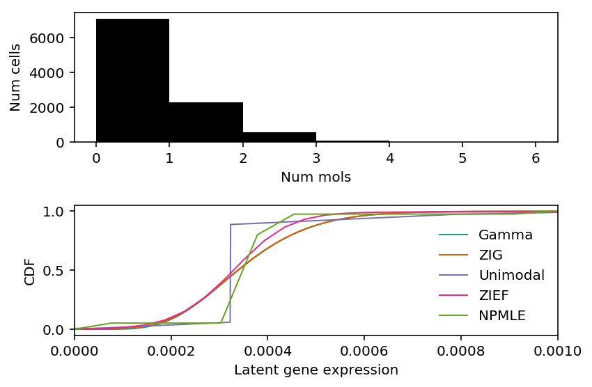
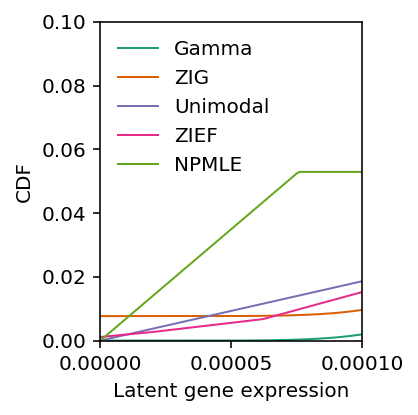

Deconvolution of near-Poisson data
Table of Contents
Introduction
In real data, ZIEF appears to outperform other methods, but only for trivial cases where the data appears to be Poisson-distributed.
Investigate why this happens.
Setup
import numpy as np import pandas as pd import scipy.special as sp import scipy.stats as st import scmodes import scqtl.simple import rpy2.robjects.packages import rpy2.robjects.pandas2ri rpy2.robjects.pandas2ri.activate() ashr = rpy2.robjects.packages.importr('ashr') descend = rpy2.robjects.packages.importr('descend')
%matplotlib inline %config InlineBackend.figure_formats = set(['retina'])
import matplotlib.pyplot as plt plt.rcParams['figure.facecolor'] = 'w'
Results
Extract the examples.
Read the results of benchmarking deconvolution methods on homogeneous tissues.
benchmark = {} for data in ('cytotoxic_t', 'b_cells', 'ipsc'): benchmark[data] = ( pd.read_csv(f'/project2/mstephens/aksarkar/projects/singlecell-modes/data/deconv-generalization/{data}-gpu.txt.gz', index_col=0, sep='\t') .merge(pd.read_csv(f'/project2/mstephens/aksarkar/projects/singlecell-modes/data/deconv-generalization/{data}-unimodal.txt.gz', index_col=0, sep='\t'), left_index=True, right_index=True) .merge(pd.read_csv(f'/project2/mstephens/aksarkar/projects/singlecell-modes/data/deconv-generalization/{data}-zief.txt.gz', index_col=0, sep='\t'), left_index=True, right_index=True) .merge(pd.read_csv(f'/project2/mstephens/aksarkar/projects/singlecell-modes/data/deconv-generalization/{data}-npmle.txt.gz', index_col=0, sep='\t'), left_index=True, right_index=True))
Extract the genes for which ZIEF does best.
query = benchmark['b_cells'][benchmark['b_cells']['zief'] > benchmark['b_cells']['gamma']].index
Read the count matrix.
b_cells = scmodes.dataset.read_10x('/project2/mstephens/aksarkar/projects/singlecell-ideas/data/10xgenomics/b_cells/filtered_matrices_mex/hg19/', return_df=True) s = b_cells.sum(axis=1)
Read the gene metadata.
gene_info = pd.read_csv('/project2/mstephens/aksarkar/projects/singlecell-qtl/data/scqtl-genes.txt.gz', sep='\t', index_col=0)
Deconvolve specific examples
Fit various deconvolutions.
x = b_cells.loc[:,query[0]] lam = x / s K = 100 grid = np.linspace(0, lam.max(), K + 1)
gamma_res = scqtl.simple.fit_nb(x, s) zig_res = scqtl.simple.fit_zinb(x, s) unimodal_res = ashr.ash_workhorse( pd.Series(np.zeros(x.shape)), 1, outputlevel=pd.Series(['fitted_g', 'loglik']), lik=ashr.lik_pois(y=x, scale=s, link='identity'), mixsd=pd.Series(np.geomspace(lam.min() + 1e-8, lam.max(), 25)), mode=pd.Series([lam.min(), lam.max()])) zief_res = descend.deconvSingle(x, scaling_consts=s, verbose=False) npmle_res = ashr.ash_workhorse( pd.Series(np.zeros(x.shape)), 1, outputlevel=pd.Series(['fitted_g', 'loglik']), lik=ashr.lik_pois(y=x, scale=s, link='identity'), g=ashr.unimix(pd.Series(np.ones(K) / K), pd.Series(grid[:-1]), pd.Series(grid[1:])))
Discretize the CDFs.
grid = np.linspace(lam.min(), 1e-3, 1000) gamma_cdf = st.gamma(a=gamma_res[1], scale=gamma_res[0] / gamma_res[1]).cdf(grid) zig_cdf = gamma_cdf * sp.expit(-zig_res[2]) + sp.expit(zig_res[2]) unimodal_cdf = ashr.cdf_ash(unimodal_res, grid) zief_g = np.array(zief_res.slots['distribution'])[:,:2] zief_cdf = np.array([zief_g[:,0], np.cumsum(zief_g[:,1])]) npmle_cdf = ashr.cdf_ash(npmle_res, grid)
plt.clf() fig, ax = plt.subplots(2, 1) fig.set_size_inches(6, 4) ax[0].hist(x, bins=np.arange(x.max() + 1), color='k') ax[0].set_xlabel('Num mols') ax[0].set_ylabel('Num cells') cm = plt.get_cmap('Dark2').colors ax[1].set_xlim(0, 1e-3) ax[1].plot(grid, gamma_cdf, color=cm[0], lw=1, label='Gamma') ax[1].plot(grid, zig_cdf, color=cm[1], lw=1, label='ZIG') ax[1].plot(np.array(unimodal_cdf.rx2('x')), np.array(unimodal_cdf.rx2('y')).ravel(), c=cm[2], lw=1, label='Unimodal') ax[1].plot(zief_cdf[0], zief_cdf[1], c=cm[3], lw=1, label='ZIEF') ax[1].plot(np.array(npmle_cdf.rx2('x')), np.array(npmle_cdf.rx2('y')).ravel(), c=cm[4], lw=1, label='NPMLE') ax[1].set_xlabel('Latent gene expression') ax[1].set_ylabel('CDF') ax[1].legend(frameon=False) fig.tight_layout()

Zoom in around 0.
plt.clf() plt.gcf().set_size_inches(3, 3) cm = plt.get_cmap('Dark2').colors plt.xlim(0, 1e-4) plt.ylim(0, .1) plt.xticks([0, 5e-5, 1e-4]) plt.plot(grid, gamma_cdf, color=cm[0], lw=1, label='Gamma') plt.plot(grid, zig_cdf, color=cm[1], lw=1, label='ZIG') plt.plot(np.array(unimodal_cdf.rx2('x')), np.array(unimodal_cdf.rx2('y')).ravel(), c=cm[2], lw=1, label='Unimodal') plt.plot(zief_cdf[0], zief_cdf[1], c=cm[3], lw=1, label='ZIEF') plt.plot(np.array(npmle_cdf.rx2('x')), np.array(npmle_cdf.rx2('y')).ravel(), c=cm[4], lw=1, label='NPMLE') plt.xlabel('Latent gene expression') plt.ylabel('CDF') plt.legend(frameon=False) plt.tight_layout()

Report the training log likelihoods.
point_llik = st.poisson(mu=x.sum() / s.sum()).logpmf(x) gamma_llik = st.nbinom(n=gamma_res[1], p=1 / (1 + s * gamma_res[0] / gamma_res[1])).logpmf(x) zig_llik = np.where(x < 1, -np.log1p(np.exp(-zig_res[2])) + np.log1p(np.exp(gamma_llik - zig_res[2])), -np.log1p(np.exp(zig_res[2])) + gamma_llik) unimodal_llik = np.array(unimodal_res.rx2('loglik')) zief_llik = np.where(x < 1, np.log(st.poisson(mu=s.values.reshape(-1, 1) * zief_g[:,0]).pmf(x.values.reshape(-1, 1)).dot(zief_g[:,1])), np.log(st.poisson(mu=s.values.reshape(-1, 1) * zief_g[1:,0]).pmf(x.values.reshape(-1, 1)).dot(zief_g[1:,1]))) npmle_llik = np.array(npmle_res.rx2('loglik')) pd.Series({'Point': point_llik.sum(), 'Gamma': gamma_llik.sum(), 'ZIG': zig_llik.sum(), 'Unimodal': unimodal_llik.sum(), 'ZIEF': zief_llik.sum(), 'NPMLE': npmle_llik.sum()})
Point -31653.253236 Gamma -7702.696681 ZIG -7702.818529 Unimodal -7702.849389 ZIEF -7702.299609 NPMLE -7701.940404 dtype: float64
The reason ZIEF appeared anomalous in our benchmark was that our implementation of the validation set log likelihood, marginalizing over the estimated latent distribution \(\hat{g}\), was incorrect.